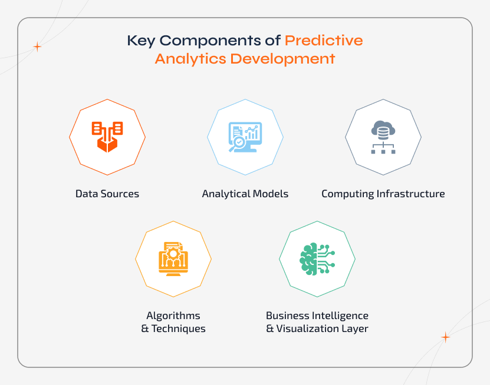
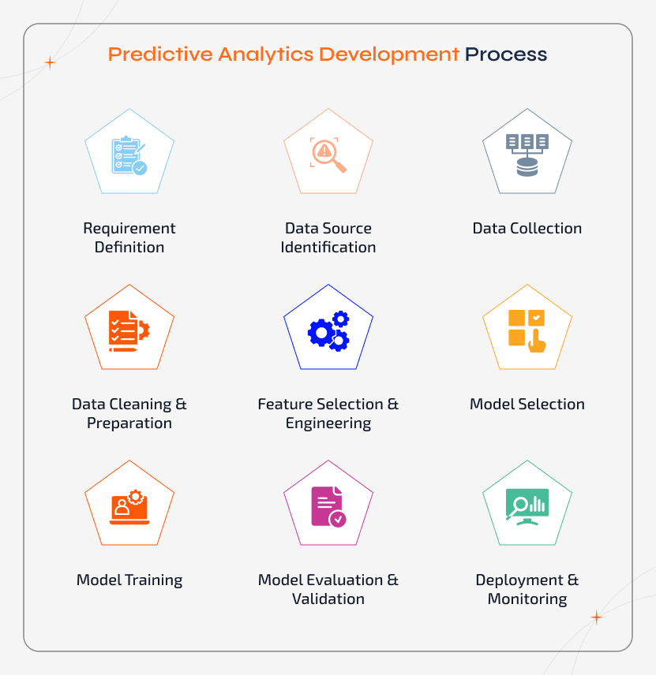
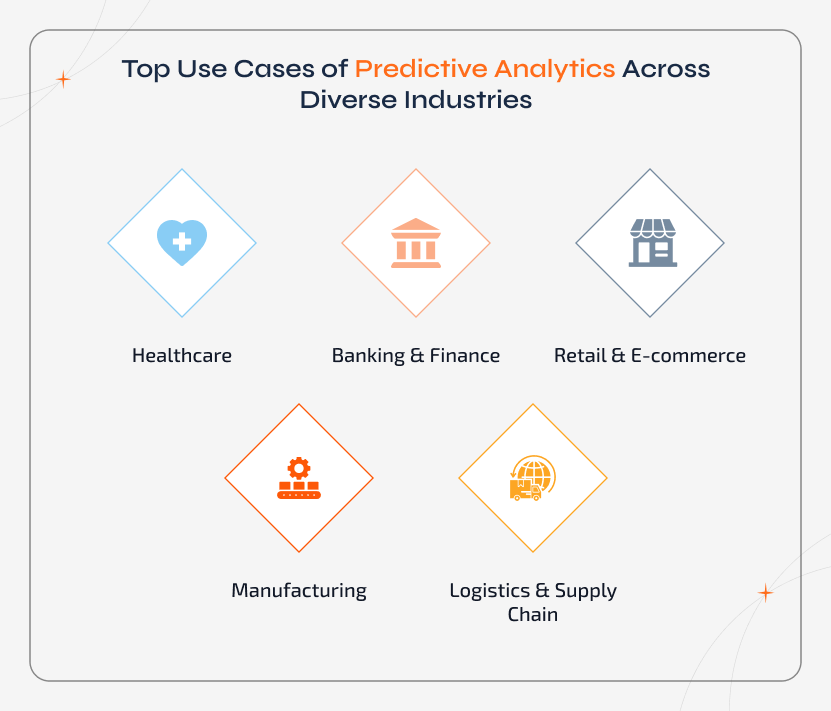
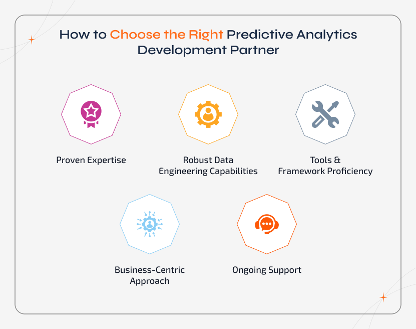

Businesses today face constant uncertainty, from shifting customer demand to operational risks that strike without warning. Depending solely on historical reports will often leave organizations to react behind schedule. Predictive analytics development, one of the current AI trends, addresses this gap by using statistical models and Machine Learning to forecast future outcomes. Also, it enables businesses to anticipate future trends, optimize decisions, and reduce potential risks proactively.
In this blog, we’ll explore the fundamentals of predictive analytics development, its core capabilities, and more on how it actually delivers measurable business value.
What is Predictive Analytics Development?
Predictive analytics development is nothing but designing and building data-driven models with a dedicated team that analyzes historical and real-time information to forecast future outcomes. Instead of explaining what has already happened, the predictive analysis service focuses on identifying similar patterns, correlations, and trends that indicate what is more likely to occur next.
This approach helps organizations in customer behaviour prediction, enhances operational efficiency, manages risks, and uncovers opportunities before they even become visible through traditional reporting. By implementing predictive models into business systems and workflows, startups and enterprises can turn raw data into an actionable foresight that drives rapid growth.
Why Predictive Analytics Matters for Modern Business?
Usually, modern businesses operate in environments where conversions happen so fast, and uncertainty is constant. Predictive analytics actually matters because it allows organizations to prepare for future scenarios, instead of reacting to outcomes after it made certain impact. By forecasting demand shifts, potential risks, and market fluctuations, businesses can plan with higher confidence.
Beyond just planning, predictive analytics strengthens competitive positioning, helping leaders prioritize high-impact opportunities. When the gathered insights are forward-looking instead of retrospective, businesses will gain the ability to act smartly, adapt faster, and sustain long-term growth in this fast-paced economy.
Key Components of Predictive Analytics Development
The effectiveness of predictive analytics depends on a set of core components working together seamlessly. These core elements play a major role in accurate forecasting and consistent decision support across business operations.

1. Data Sources
Predictive analytics mainly relies on diverse data sources, including customer interactions, transactional systems, operational platforms, and external data feeds. The consistency, quality, and relevance of this data will directly influence the accuracy of the predictions.
2. Analytical Models
These models form the key to predictive analytics by analyzing the historical patterns and relationships within the data. They’re specifically designed to generate probability-based forecasts that actually support informed business decisions.
3. Computing Infrastructure
Scalable computing environments ensure efficient data processing, model training and evaluation, and prediction delivery in real-time. This kind of infrastructure ensures predictive system can handle growing data volumes and complex estimations.
4. Algorithms & Techniques
Predictive outcomes are literally powered by algorithms, such as regression, classification, clustering, and time-series analysis. Choosing the right predictive analytics techniques depends on the business objective and the real nature of the data which is being analyzed.
5. Business Intelligence & Visualization Layer
This specific component translates predictive results into clear insights through dashboards, reports, and visualizations. This enables stakeholders to interpret predictions much quickly and take timely and data-backed decisions.
Predictive Analytics Models Powering Modern Business Decisions
Predictive analytics relies on a certain range of analytical models to generate accurate forecasts and insights. Each model is specifically designed to address data patterns and decision needs.
1. Regression Models
These models are used to predict the continuous numerical value based on relationships between variables. These are commonly applied in forecasting revenue, demand, and performance metrics.
2. Classification Models
These types of models will predict the discrete outcomes by assigning the data into predefined categories. It is widely used for credit risk assessment, customer segmentation, and fraud detection.
3. Clustering Models
Clustering models will group similar data points without any predefined labels. This model helps businesses to uncover hidden patterns, segment users, and pinpoint behavioural similarities.
4. Time-Series Models
These kinds of models analyzes data points collected over a specific time period to forecast future trends. They are ideal for demand planning, financial forecasting, and seasonal trend analysis.
5. Anomaly Detection Models
Anomaly detection models can identify deviations from normal patterns within the data. These models are critical for detecting fraud, system failures, and operational risks.
Predictive Analytics Development Process
Predictive analytics development follows a structured approach to convert the raw data into reliable future forecasts. This ensures that predictive models are accurate, scalable, and aligned with the business objectives.

Step 1: Requirement Definition
The objectives are clearly identified with success metrics, along with what exactly the model is built to inform.
Step 2: Data Source Identification
The relevant internal and external data sources are selected, which are required to address the defined business problems.
Step 3: Data Collection
Further, the structured and unstructured data are gathered from multiple systems and released into a centralized environment.
Step 4: Data Cleaning & Preparation
Experts will remove the inconsistencies, missing values, and transform the data to ensure accuracy and usability.
Step 5: Feature Selection & Engineering
Most relevant variables are identified and create new features that improve the model performance.
Step 6: Model Selection
Appropriate predictive models are chosen based on the data characteristics and business objectives.
Step 7: Model Training
Using the historical data, the training models learn patterns and further generate predictive logic.
Step 8: Model Evaluation & Validation
Testing model accuracy, reliability, and bias to make sure the predictions meet the performance expectations.
Step 9: Deployment & Monitoring
Finally, the model is integrated into business systems, and the performance is monitored continuously for ongoing improvement.
Benefits of Investing in Predictive Analytics Development
Businesses investing in predictive analytics using AI development enable organizations to transform data into actionable insights, driving smarter business decisions. Here are some of the key benefits of why you should invest in predictive analytics development.
Proactive Decision-Making
Predictive analytics empowers organizations to anticipate trends, potential risks, and opportunities before they even occur. By relying mostly on data-driven decision-making and forecasting, businesses can make strategic decisions with confidence instead of reacting to events after they occur.
Enhanced Operational Efficiency
By analyzing the patterns in the processes, inventory, and resource usage, predictive analytics helps optimize operations. As a result, organizations can forecast demand, allocate resources effectively, and prevent potential flaws, leading to significant time and cost savings.
Boosted Customer Insights
With predictive analytics, understanding the customer behaviour and user preferences becomes much easier. Now, businesses can easily identify high-value customers and tailor personalized marketing and service strategies, which strengthens the engagement and loyalty among customers.
Competitive Advantage
Forward-looking insights allow firms to respond quickly to market changes and stay ahead of competitors. By leveraging predictive intelligence, businesses can now identify new opportunities and can drive sustainable growth.
Top Use Cases of Predictive Analytics Across Diverse Industries
Predictive analytics has been applied across multiple industries to anticipate outcomes, optimize operations, and minimize uncertainty. So that organizations can make informed decisions to learn the potential outcomes.

Healthcare
Healthcare providers can take advantage of predictive analytics to identify high-risk patients and enhance treatment outcomes. Using this, businesses can spot early diseases, resource planning, and minimizes operational inefficiencies.
Banking & Finance
Predictive analytics plays a major role in the banking sector to assess credit risk, detect fraud activities, and forecast market trends. They also enhance customer segmentation and do support personalized financial offerings.
Retail & E-commerce
Retailers can leverage predictive analytics to predict customer demand, inventory levels, and personalize marketing campaigns. This improves the pricing strategies and boosts the overall customer retention.
Manufacturing
In the manufacturing sector, it enables predictive maintenance analytics by identifying equipment failures even before they occur. It also supports demand forecasting, quality control, and supply chain optimization.
Logistics & Supply Chain
Route planning, demand forecasting, and inventory management are improved using predictive analytics. This helps organizations to reduce delivery delays, manage disruptions, and optimize the overall supply chain performance.
Advanced Technologies Used in Predictive Analytics Development
Predictive analytics doesn’t just operate with generic systems, but is powered by advanced technologies that enhance data processing and model accuracy. These technologies enable organizations to generate quick insights and support real-time predictive capabilities.
Machine Learning & AI
With advanced Machine Learning and Artificial Intelligence, it enables systems to learn from data patterns and improve prediction accuracy over time. These future technologies support complex decision-making and adaptive predictive models.
Big Data Technologies
Big data technologies can handle large volumes of structured and unstructured data more efficiently. They actually enable faster data processing and support high-scale predictive analytics initiatives.
Cloud Computing
Cloud platforms provide scalable infrastructure for model training, data storage, and deployment. These platforms ensure cost efficiency, scalability, and high availability for predictive systems.
Data Visualization & BI Tools
Translate the predictive outputs into intuitive dashboards and reports. They even help the stakeholders to interpret insights and act on predictions effectively.
Automation & ML Platforms
Supports automated model deployment, continuous monitoring and performance optimization. They make sure that the predictive models remain accurate and reliable.
Major Challenges Businesses Face in Predictive Analytics & Solutions
Even though predictive analytics brings numerous benefits to business, it does come with technical, operational, and strategic barriers. Understanding these challenges and applying the right solutions is vital to ensure accurate insights and long-term business growth.
Data Quality & Consistency
Challenge Faced: Compared to others, poor data quality is one of the biggest challenges faced by firms in predictive analytics. Incomplete and inconsistent data will always lead to unreliable predictions.
Possible Solution: This challenge can be addressed by implementing robust data governance frameworks, standardizing data sources, and validating data accuracy continuously.
Lack of Skilled Talent
Challenge Faced: Many organizations, especially startups, struggle due to the shortage of skilled professionals with expertise in predictive modelling.
Possible Solution: Partnering up with an experienced analytics team and investing in strategic training programs helps to bridge the skill gap and ensures effective model development.
Model Accuracy & Bias
Challenge Faced: At times, when not trained properly or monitored, the predictive modes will generate inaccurate or biased outcomes.
Possible Solution: Proper model validation, bias testing, and performance optimization ensure the prediction remains reliable and fair.
Scalability & Infrastructure Constraints
Challenge Faced: As the data volume grows, the predictive system often faces performance and scalability limitations.
Possible Solution: Leverage cloud analytics solutions and scalable data platforms. This enables businesses to handle complex predictive workflows easily.
Integration with Business Systems
Challenge Faced: Predictive impact will lose impact when they’re disconnected from the operational workflow.
Possible Solutions: Seamless integration of the predictive models into existing business systems ensures the insights are actionable and supports real-time decision-making.
What’s the Cost of Predictive Software Development
The actual cost of predictive software development cannot be determined as it depends on multiple technical and business factors. Projects with simple forecasting requirements and limited datasets cost much less. Meanwhile, the enterprise-grade solutions with real-time analytics and advanced models require a huge investment.
On the contrary, if it’s about approximate pricing, the cost of predictive analytics in software development might start at 20,000-40,000 USD for basic solutions and 100,000-200,000 USD for advanced and custom-built platforms. In the meantime, enterprise-grade predictive analytics systems with large-scale data processing and integrations can exceed 30,000 USD. Additionally, ongoing maintenance and continuous monitoring will add up to 10-25% annually.
How to Choose the Right Predictive Analytics Development Partner
Choosing the right predictive analytics development partner or AI solutions provider is crucial for achieving accurate insights and long-term success. Only the right development partner ensures technical excellence and business alignment that delivers true value.

Proven Expertise
Ensure you evaluate the partner’s experience in building predictive models across various industries. In accordance with that, see their success rate in delivering accurate and scalable solutions.
Robust Data Engineering Capabilities
Make sure that the partner can handle data collection, integration, and preparation efficiently, as the quality of data directly impacts predictive accuracy.
Tools & Framework Proficiency
Search for expertise in modern analytics technologies, Machine Learning prediction models, cloud platforms, AI agent development, predictive analytics tools, and MLOps practices, so that businesses can scale efficiently.
Business-Centric Approach
Instead of focusing only on technical implementation, the right predictive development partner should align with the business objectives, decision workflows, and measurable outcomes.
Ongoing Support
Choose a reliable AI consulting company that can offer continuous monitoring, optimization, and scalability support to ensure long-term value from predictive analytics investments.
How Sparkout Helps in Aligning with Predictive Analytics Development
Being one of the leading custom software development companies, Sparkout brings a blend of data engineering and advanced analytics for business analytics initiatives. By aligning the business models with real-world business objectives, Saprkout helps organizations to move beyond the actual happening and achieve measurable outcomes through accurate forecasting and actionable insights.
On the other hand, with expertise across Machine Learning, scalable cloud architecture, and seamless system integration, Sparkout supports end-to-end predictive analytics development. From data preparation to full-scale deployment, Sparkout ensures that predictive solutions are aligned with evolving business needs.
Future Trends in Predictive Analytics [2026 & Beyond]
In the upcoming years, predictive analytics will continue to evolve towards more autonomous and intelligent systems, powered by Automated Machine Learning, Artificial Intelligence, and real-time data processing. Over time, the predictive models will increasingly self-learn, adapt to changing data patterns, and deliver faster insights with minimal human intervention. This enables organizations to respond to business changes in real time.
At the same time, there will be a stronger focus on data privacy and responsible analytics practices. As predictive systems become more embedded in core business operations, the organizations will prioritize transparency, regulatory compliance, and trust in model outcomes. This ensures that predictive insights remain ethical and aligned with the business goals.
Final Thoughts on Predictive Analytics Development
To conclude, predictive analytics development has become a strategic necessity for businesses that aim to stay competitive in the evolving environment. Once you transform historical and real-time data into forward-looking insights, organizations can anticipate change and make decisions with precision.
As predictive analytics continues to grow, investing in the right technology, development expertise, and custom AI development companies is crucial to unlock the full potential. Niche businesses that adopt a structured approach and partner with an experienced analytics provider will be in a better position and drive long-term growth.